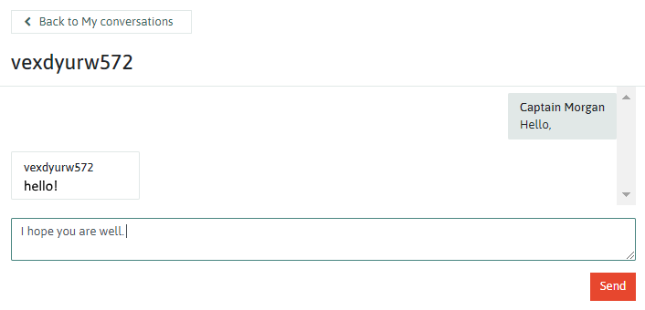

Each commoner has their own 'Commonshare' value, which represents their contribution to the Commonfare platform. This will be visualised on their profile as shown in the image on the right:
Commonfare recognises a number of ways in which a commoner can contribute to the growth and sustainability of the platform. There are four main types of interactions:
The following sections briefly describe the interactions commoners can have to increase their commonshare.
Commonshare can be increased by:

Story sharing
The 'Commoners Voices' section of commonfare.net allows Commoners to create stories of their experiences, and comment on those of others. Story interactions allow the experiences of others to be disseminated to a wider audience, and allow story authors to receive feedback.
Commonshare is increased by:
The Commonplace section of commonfare.net is where Commoners can exchange help, resources, skills and knowledge. This can be done for free, for direct trades, or you can ask to exchange for Common Coin, the digital token used on commonfare.net.
Commonshare is increased by:
Commoners can contribute by:
The commonshare will show how much each commoner contributes to the platform, and what contributions they make. Increasing one's commonshare could have benefits such as an increased basic income. More importantly, it builds trust by showing that a commoner is an active, contributing member of the community.
A Commoner's reputation is not based on their ability to provide a service or product. There is no such system that labels a Commoner as
'good' or 'bad'. Instead, reputation is built up through interactions that support the common good. Supporting others and offering services
are valued, and so is requesting this support. Those who reach out and ask for help also contribute to a collaborative society.